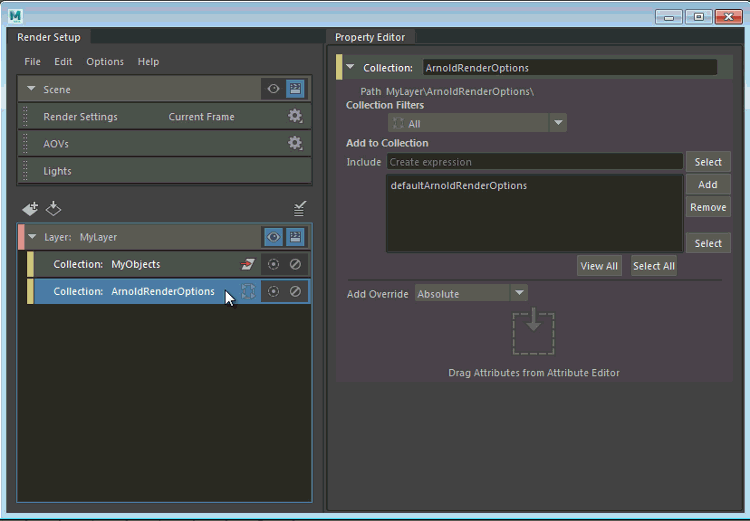

除了通过拖放和在属性上单击鼠标右键创建覆盖以外，还可以通过在“特性编辑器”(Property Editor)中输入属性名称创建覆盖。所有绝对覆盖、相对覆盖和连接覆盖均支持此功能。
- 创建一个集合，并将具有要覆盖的属性或连接的节点添加到其中。
确保“集合过滤器”(Collection Filters)设置正确且包含要覆盖的节点。单击“查看全部”(View All)以验证集合成员身份。
- 在集合上单击鼠标右键，然后选择以下选项之一：“创建绝对覆盖”(Create Absolute Override)、“创建相对覆盖”(Create Relative Override)和“创建连接覆盖”(Create Connection Override)。
- 选择该覆盖，然后在“类型属性”(Type Attribute)中输入要覆盖的节点和属性。请使用格式 node.attribute。
示例包括：defaultArnoldRenderOptions.atmosphere 和 blinn1.transparency 等。
注： 除了手动键入以外，还可以使用鼠标中键从“大纲视图”(Outliner)拖放节点名称，或者从“属性编辑器”(Attribute Editor)同时拖放节点和属性名称。
如果仅指定属性名称而不指定节点名称，Maya 会自动在集合内搜索包含此属性的节点，然后创建覆盖。否则，如果集合为空，Maya 将在场景中搜索与“集合过滤器”(Collection Filters)设置匹配的节点，然后创建覆盖。
示例工作流：覆盖 Arnold for Maya“渲染设置”(Render Settings)的“大气”(Atmosphere)属性
如果已通过将 aiFog 连接到 Arnold for Maya“渲染设置”(Render Settings)的“大气”(Atmosphere)属性向场景中添加雾，则可以通过执行以下操作对特定渲染层禁用雾：
- 创建一个集合，然后将 defaultArnoldRenderOptions 节点添加到其中。
从“集合过滤器”(Collection Filters)下拉列表中选择“全部”(All)，确保不会过滤出该节点。
- 在集合上单击鼠标右键，然后选择“创建连接覆盖”(Create Connection Override)。
- 在“特性编辑器”(Property Editor)中，输入 defaultArnoldRenderOptions.atmosphere 并单击“创建”(Create)。
使连接覆盖保持未连接状态，可在渲染层中禁用雾。
